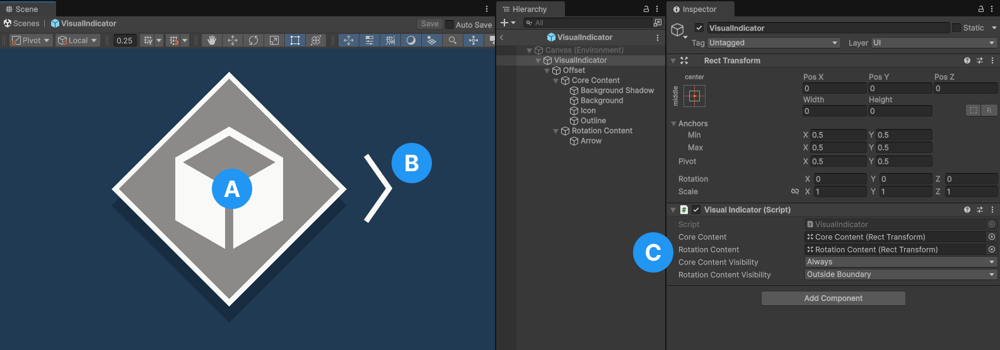

Visual indicator component
The visual indicator component is instantiated by the VisualIndicatorManager and controls each instance of a visual indicator prefab.
SerializedFields and properties
The following sections describes each references and settings of the component:
Core Indicator content
This is the root content that will be visible in the UI. Any imagery or text that is part of the core visual indicator should be parented to this transform.
Rotation content
This is the root content for image or text that will be rotated to point at the target the visual indicator is tracking. Any arrows or other imagery should be parented to this transform.
Core Indicator visibility
This determines how the indicator content will be visibile for a given state. This property does not affect the rotation content visibility. Refer to Indicator visibility to learn more about the options.
Rotation content visibility
This determines how the indicator's rotation content will be visible for a given state. This property does not affect the indicator visibility. Refer to Indicator visibility to learn more about the options.
Indicator visibility
There are four types of indicator visibility that determines how visual indicator's content and their rotation content will be visible for any given state:
Never
The content is never visible. This is typically only useful for rotation content where you don't want to show an arrow or any additional content that rotates to point at a target.
Always
The content is always visible.
Outside boundary
The content is only visible when the target is outside the boundary. This is typically used for the rotation content when you want an arrow to point at the target when it is outside the boundary.
Inside boundary
The content is only visible when the taret is inside the boundary. This is typically used for compass tape visual indicators where you only want the indicator visible when inside the bounds of the compass tape.
Set up a prefab
The visual indicator prefabs provided in in Assets/Target Indicators/Samples/Core Assets/Prefabs is a good reference for building your own indicators. Create a prefab variant to use it as a template or make a new one from scratch.
Visual indicator
The following image labels the key components of a visual indicator.

- The core visual indicator content that is parented to the Core Content in the hiearchy.
- The visual indicator rotation content that is parented to the Rotation Content in the hiearchy.
- The
VisualIndicatorcomponent and it's assigned references and settings.
Compass tape visual indicator
The CompassTapeVisualIndicator inherits from the base VisualIndicator. Like the base visual indicator, the compass tape visual indicator has the same configuration. The reason for a special CompassTapeVisualIndicator component is to handle the unique interpreting of screen pose values for compass tape target indicators.

- The core visual indicator content that is parented to the Core Content in the hiearchy.
- The
CompassTapeVisualIndicatorcomponent and its assigned references and settings. Typically theRotationContentVisibilityis unused for compass tapes and set toNever.
Compass tape boundary check
Due to the special nature of compass tape target indicators, you are responsible for checking if the indicator is outside of the compass tape boundary. The provided samples handles this in CompassTapeVisualIndicator.UpdateVisualIndicator(Pose, bool).
Note
Refer to Compass tape boundary type to remind yourself how compass tapes work.
To calculate if the target indicator screen position is outside the boundary of the visible tape, use the following steps:
Calculate the full tape to visible tape ratio
Calculate the ratio between the length of the full tape and the length of the visible tape by dividing the length of the UI element for the full tape by the length of the UI element for the visible tape. For example, if the full tape length is 1000 pixels long and the visible tape is 500 pixels long, the ratio would be
1000 ÷ 500 = 2meaning the full tape length is twice the length of the visible tape.Calculate the target position on the full tape
Remember that the target indicator manager returns a normalized value between 0 and 1 representing the target's cardinal direction relative to the user's forward direction. Take the
screenPose.position.xreceived from the target indicator manager and multiply it with the full tape to visible tape ratio from the previous step. Finally multiply the product by the length of the visible tape.For example, if the target indicator manager returns
0.25for the X position of the target and the visible tape length is 500 pixels long as described in the previous step, the position on the full tape would be0.25 * 2 * 500 = 250.Calculate the distance from the position on the full tape to the middle of the full tape
Take the result from step 2 and subtract half of the full tape length.
250 - (1000 * 0.5) = -250Calculate the position on the visible tape
Add half of the visible tape to the result from step 3.
(500 * 0.5) + (-250) = 0Check if the position is outside the boundary
If the result from step 5 is less than 0 or greater than the length of the visible tape then we know it is outside of the boundary. In our example the result is 0 indicating it's at the very begininning position on the visible tape.
Refer to the following code example to understand how these steps are implemented:
float _fullTapeToVisibleTapeRatio = 2f;
float _visibleTapeLength = 500f;
public bool IsScreenPointOutsideBoundary(Pose screenPose)
{
screenPose.position.x %= 1f;
var fullTapeLength = _fullTapeToVisibleTapeRatio * _visibleTapeLength;
var positionOnFullTape = screenPose.position.x * fullTapeLength;
var middleOfFullTape = (_fullTapeToVisibleTapeRatio * _visibleTapeLength) * 0.5f;
var middleToPositionOnFullTape = positionOnFullTape - middleOfFullTape;
var middleOfVisibleTape = _visibleTapeLength * 0.5f;
var pointOnVisibleTape = middleOfVisibleTape + middleToPositionOnFullTape;
return pointOnVisibleTape < 0 || pointOnVisibleTape > _visibleTapeLength;
}